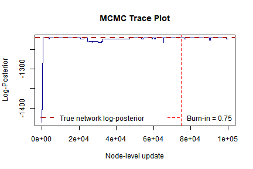
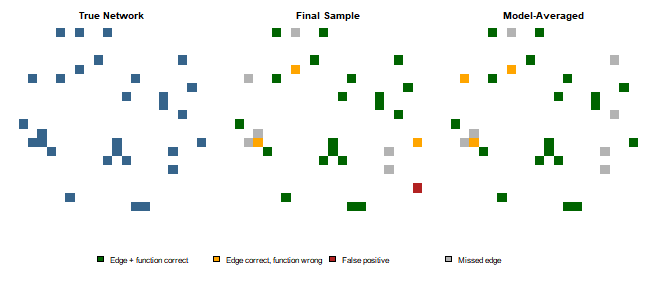

Bayesian Boolean Network Inference with BBNI
Source:vignettes/Introduction_to_BBNI.Rmd
Introduction_to_BBNI.RmdOverview
The BBNI (Bayesian Boolean Network Inference) package
implements the Bayesian Boolean network inference algorithm of Han et
al. (2014) on binary gene-expression data. The package computes both
the directed network topology (including root and non-root nodes) and
the Boolean transition functions corresponding to each defined node.
This approach deliberately attempts to compensate for biological
noise and model uncertainty, two central priorities stated in Han et
al. (2014). Employing a Metropolis-within-Gibbs Markov chain Monte
Carlo (MCMC) process, the BBNI sampler is able to estimate
the posterior distribution of valid directed acyclic graph (DAG)
topologies and their corresponding Boolean logic functions.
This vignette presents an example simulated workflow utilizing the package. That is, simulating a noisy time-series dataset from an initial topology and transition functions; running the implemented MCMC sampler; and lastly, running various evaluation tests to determine how well the algorithm recovered the original topology and Boolean functions.
Setup and simulation
First, we load the package:
After setup, we will use the package’s simulation functions
GenerateNetwork and GenerateSample (both
exported). These will initialize a random, known network topology and
the associated transition functions, then subsequently take a simulated
time-series sample from it, respectively. Keeping a stored reference
point allows for assessment of final recovery of both the edge structure
and the Boolean transition functions.
set.seed(303)
num_nodes <- 20
sample_size <- 80
# 1. Generate random DAG topology (T) and associated Boolean transition functions (F)
true_network <- GenerateNetwork(num.node = num_nodes)
# 2. Set Beta prior hyperparameters. Root nodes use Beta(3, 3), defining a prior
# mean of 0.5 while also permitting node-specific variation. Final row specifies
# hyperparameters for the global noise parameter and satisfies beta1 < beta2.
prior_para <- matrix(3, nrow = num_nodes + 1, ncol = 2)
prior_para[num_nodes + 1, 1] <- 2
prior_para[num_nodes + 1, 2] <- 100
# Sample independent root node expression probabilities from Beta priors
para <- numeric(num_nodes + 1)
for (i in 1:(num_nodes + 1)) {
para[i] <- rbeta(1, prior_para[i, 1], prior_para[i, 2])
}
# For simulation, fix the noise rate at 25% instead of the raw
# Beta(2, 100) draw so we have clear benchmark for validation.
para[num_nodes + 1] <- 0.25
# 3. Generate noise matrix and simulate observational dataset (G)
error_matrix <- matrix(rbinom(num_nodes * sample_size, 1, para[num_nodes + 1]),
nrow = num_nodes, ncol = sample_size
)
simulated_data <- GenerateSample(
trans_matrix = true_network,
num.node = num_nodes,
SampleSize = sample_size,
para = para,
error = error_matrix
)true_network is a num_nodes x
num_nodes matrix encoding both the DAG topology generated
by GenerateNetwork:
- An entry of
0at position[i, j]signifies that nodejis not a parent of nodei. - A nonzero entry at
[i, j]signifies that nodejis a parent of nodei; the integer value corresponds to the Boolean transition function defining that parent relation.
simulated_data is the simulated observed data matrix
(\(G\)): a num_nodes x
sample_size binary matrix in which each row represents a
gene/node and each column represents an observation. The matrix is
simulated from the Boolean logic defined in true_network
and then distorted using the simulated noise matrix
(error_matrix).
For real-world usage, GeneData must use the same format:
an n x m binary matrix with rows corresponding
to nodes, like genes, and columns corresponding to observations or
sequenced time points. All entries must be recorded as binary (0/1)
expression states.
Running the MCMC sampler
We next execute run_bbni() on the simulated data. The
main arguments are:
-
num_update- total number of MCMC outer iterations. -
penalty- structural-prior hyperparameter that penalizes graph density and complexity. -
prop.ratio- mixing weight for the proposal distribution; specifically, the probability of selecting the empirical proposal rather than a uniform random move. -
prior_para- hyperparameter matrix in which the firstnrows define Beta prior parameters for root-node Bernoulli activation probabilities; rown+1sets the prior parameters for the global noise rate \(e\), with the required constraint \(\beta_1 < \beta_2\).
# Define MCMC and prior hyperparameters
num_update <- 4000 # Total MCMC iterations
penalty <- 0.1 # Structural prior penalty for network complexity
prop_ratio <- 0.1 # Initial proposal mixture coefficient
run_start <- Sys.time()
mcmc_results <- run_bbni(
GeneData = simulated_data,
num.node = num_nodes,
SampleSize = sample_size,
prior_para = prior_para,
num_update = num_update,
penalty = penalty,
prop.ratio = prop_ratio
)
run_end <- Sys.time()run_bbni() prints a diagnostic log for each node-level
update, resulting in num.node \(\times\) num_update lines in
total. The summary with the essential values is printed below:
cat(
"Sampler completed", num_update, "iterations (",
num_nodes * num_update, "node updates) in",
round(as.numeric(difftime(run_end, run_start, units = "mins")), 2), "minutes\n"
)
#> Sampler completed 4000 iterations ( 80000 node updates) in 30.51 minutesAnalyzing the output
run_bbni() returns a list containing the sampled path of
the Markov chain:
-
log_posterior- numeric vector of log-posterior values stored after each node-level update. -
networks- list of sampled transition-function matrices. Each element shares the same format astrue_network.
Convergence: trace plot
A trace plot of the log-posterior over MCMC updates evaluates chain
behavior. Given that we know the specific ground-truth network, we can
further compute the log-posterior of the true network via the package’s
internal Error_LLH() function and graph it as a reference
baseline:
# Evaluate log-posterior value of the true network
# Call the unexported package function to compute a reference log-posterior
# for the ground-truth network.
true_logpost_raw <- BBNI:::Error_LLH(
TRFUM = true_network, GeneData = simulated_data,
SampleSize = sample_size, num.node = num_nodes,
prior_para = prior_para, penalty = penalty
)
# The log-posterior value is the last element of the first returned vector.
true_logpost <- true_logpost_raw[[1]][length(true_logpost_raw[[1]])]
# Plot Markov chain trace against individual node-level updates.
plot(mcmc_results$log_posterior,
type = "l",
xlab = "MCMC Step (one per node update)", ylab = "Log-Posterior",
main = "MCMC Trace Plot",
ylim = range(c(mcmc_results$log_posterior, true_logpost))
)
# Add true-network reference value.
abline(h = true_logpost, col = "firebrick", lty = 2, lwd = 2)
legend("bottomright",
legend = "True network log-posterior",
col = "firebrick", lty = 2, lwd = 2, bty = "n"
)
Note that the horizontal axis has units of node-level updates rather than outer MCMC iterations. The convergence of the log-posterior towards the baseline value is an indication of chain success. With statistical variation being inevitable, a perfect match with the true topology and Boolean functions is not expected from a single posterior sample.
Final sampled network
The final sampled network can be outputted as follows:
final_network <- tail(mcmc_results$networks, 1)[[1]]
final_network
#> [,1] [,2] [,3] [,4] [,5] [,6] [,7] [,8] [,9] [,10] [,11] [,12] [,13] [,14] [,15] [,16] [,17] [,18] [,19] [,20]
#> [1,] 0 0 0 0 0 0 0 0 0 11 0 0 0 0 0 0 0 0 0 0
#> [2,] 0 0 0 0 0 0 0 0 0 0 0 0 0 0 0 0 0 0 0 0
#> [3,] 0 0 0 0 0 0 0 11 0 0 0 0 0 0 0 0 0 0 0 0
#> [4,] 0 0 0 0 0 0 12 0 0 0 0 0 0 0 0 0 0 0 0 0
#> [5,] 0 0 0 0 0 0 0 0 0 0 0 0 0 0 6 0 0 0 0 6
#> [6,] 0 12 0 0 0 0 0 0 0 0 0 0 0 0 0 0 0 0 0 0
#> [7,] 0 0 0 0 0 0 0 0 0 0 0 0 0 0 0 11 0 0 0 0
#> [8,] 0 0 0 0 0 0 0 0 0 0 0 0 0 0 0 0 0 0 0 0
#> [9,] 0 0 0 0 0 0 0 0 0 0 0 0 0 0 0 0 12 0 0 0
#> [10,] 0 0 0 0 0 8 0 0 0 0 0 0 0 0 0 0 0 0 0 8
#> [11,] 0 0 0 0 0 0 3 3 0 0 0 0 0 0 0 0 0 0 0 0
#> [12,] 0 0 0 0 0 4 0 0 0 0 0 0 4 0 0 0 0 0 0 0
#> [13,] 5 0 0 0 0 0 0 0 0 0 0 0 0 0 5 0 0 0 0 0
#> [14,] 12 0 0 0 0 0 0 0 0 0 0 0 0 0 0 0 0 0 0 0
#> [15,] 0 0 0 0 0 0 0 0 0 0 0 0 0 0 0 0 0 0 0 0
#> [16,] 0 0 0 0 0 0 0 0 0 0 0 2 2 0 0 0 0 0 0 0
#> [17,] 0 0 0 0 0 0 0 0 0 0 0 0 0 0 0 0 0 0 0 0
#> [18,] 0 0 0 0 0 0 0 0 0 0 2 0 0 0 0 0 2 0 0 0
#> [19,] 0 0 0 0 0 0 0 0 0 0 0 0 0 12 0 0 0 0 0 0
#> [20,] 0 0 7 0 0 0 0 7 0 0 0 0 0 0 0 0 0 0 0 0Recovery of the true network
As we know the true network, we can quantify the recovery by comparing the final sampled network with the true edge structure and Boolean transition functions:
true_edges <- true_network > 0
final_edges <- final_network > 0
true_positive <- sum(true_edges & final_edges) # correctly recovered edges
false_positive <- sum(!true_edges & final_edges) # spurious edges
false_negative <- sum(true_edges & !final_edges) # missed true edges
cat("True edges in the network: ", sum(true_edges), "\n")
#> True edges in the network: 29
cat("Correctly recovered edges: ", true_positive, "\n")
#> Correctly recovered edges: 23
cat("Spurious (false positive) edges: ", false_positive, "\n")
#> Spurious (false positive) edges: 1
cat("Missed (false negative) edges: ", false_negative, "\n")
#> Missed (false negative) edges: 6
# Among the correctly-recovered edges, how many also got the right
# Boolean function?
correct_function_final <- sum(true_edges & final_edges & (true_network == final_network))
cat("...of which function also correct: ", correct_function_final, "out of", true_positive, "\n")
#> ...of which function also correct: 20 out of 23Once again, some deviation is reasonable because this comparison uses only one sample from the end of the Markov chain. A posterior summary across multiple samples may allow a more stable estimate.
Posterior summarization by Bayesian model averaging
Instead of relying on a single sampled network, we can summarize the posterior distribution by Bayesian model averaging (BMA) over several retained network samples. This allows calculation of posterior edge-inclusion probabilities, which are often more informative than a single end sample. In biological applications, reducing false-positive edges is particularly important, as each predicted interaction may warrant costly experimental validation.
We first discard an initial burn-in period, here set to the first 75%
of the recorded chain. This is to reduce the impact of unpredictability
of the arbitrary starting structure. We then retain one network per
outer iteration (every num.node node-level updates) to
account for the strong statistical dependence of within-iteration
samples. For each directed edge, the posterior inclusion probability is
calculated as the fraction of retained samples in which that edge
appears:
# Set burn-in to 75%, determined by visual inspection of the trace plot above.
burnin_cutoff <- round(0.75 * length(mcmc_results$log_posterior))
# Retain one sampled network per full outer iteration.
keep_idx <- seq(burnin_cutoff + 1, length(mcmc_results$log_posterior), by = num_nodes)
cat("Post-burn-in, pruned samples retained:", length(keep_idx), "\n")
#> Post-burn-in, pruned samples retained: 1000
# Estimate posterior edge-inclusion probabilities across retained samples.
edge_prob <- Reduce(`+`, lapply(mcmc_results$networks[keep_idx], function(m) (m > 0) * 1)) / length(keep_idx)
bma_edges <- edge_prob > 0.5 # classify an edge as present if its posterior probability exceeds 0.5
bma_tp <- sum(true_edges & bma_edges)
bma_fp <- sum(!true_edges & bma_edges)
bma_fn <- sum(true_edges & !bma_edges)
cat("Correctly recovered edges: ", bma_tp, "\n")
#> Correctly recovered edges: 22
cat("Spurious (false positive) edges: ", bma_fp, "\n")
#> Spurious (false positive) edges: 0
cat("Missed (false negative) edges: ", bma_fn, "\n")
#> Missed (false negative) edges: 7
# To evaluate Boolean function accuracy, take the posterior mode (most frequently
# sampled function code) for each matrix coordinate across the retained samples,
# then construct a consensus network topology.
get_mode_nonzero <- function(v) {
nz <- v[v > 0]
if (length(nz) == 0) return(0)
tab <- table(nz)
as.numeric(names(tab)[which.max(tab)])
}
sample_array <- simplify2array(mcmc_results$networks[keep_idx])
bma_function <- apply(sample_array, c(1, 2), get_mode_nonzero)
bma_network <- matrix(0, nrow = num_nodes, ncol = num_nodes)
bma_network[bma_edges] <- bma_function[bma_edges]
correct_function_bma <- sum(true_edges & bma_edges & (true_network == bma_network))
cat("...of which Boolean function also correct: ", correct_function_bma, "out of", bma_tp, "\n")
#> ...of which Boolean function also correct: 19 out of 22
missed_edge_idx <- which(true_edges & !final_edges)
fp_edge_idx <- which(!true_edges & final_edges)
cat("Posterior probability of the missed true edge:", edge_prob[missed_edge_idx], "\n")
#> Posterior probability of the missed true edge: 0.001 0.024 0.211 0.011 0.654 0.016
cat("Posterior probability of the false-positive edge:", edge_prob[fp_edge_idx], "\n")
#> Posterior probability of the false-positive edge: 0.358Visualizing network recovery
The following plot compares the true network, the final sampled network, and the BMA consensus network. Edges that are structurally correct but assigned the wrong Boolean function are marked differently from edges for which both the parent relation and function are correctly recovered:
# Evaluate each matrix entry compared to the true network: correct absence,
# fully correct edge, correct edge with wrong function, false positive,
# or missed edge (false negative).
classify_match <- function(true_net, sample_net) {
true_e <- true_net > 0
samp_e <- sample_net > 0
out <- matrix(0, nrow = nrow(true_net), ncol = ncol(true_net))
out[!true_e & !samp_e] <- 0 # correct absence
out[true_e & samp_e & (true_net == sample_net)] <- 1 # edge + function correct
out[true_e & samp_e & (true_net != sample_net)] <- 2 # edge correct, function wrong
out[!true_e & samp_e] <- 3 # false positive
out[true_e & !samp_e] <- 4 # missed (false negative)
out
}
final_match <- classify_match(true_network, final_network)
bma_match <- classify_match(true_network, bma_network)
match_cols <- c("white", "darkgreen", "orange", "firebrick", "gray70")
match_breaks <- c(-0.5, 0.5, 1.5, 2.5, 3.5, 4.5)
match_labels <- c("Edge + function correct", "Edge correct, function wrong",
"False positive", "Missed edge")
layout(matrix(c(1, 2, 3, 4, 4, 4), nrow = 2, byrow = TRUE), heights = c(4, 1))
par(mar = c(2, 2, 3, 1))
image(true_edges * 1, col = c("white", "steelblue4"), breaks = c(-0.5, 0.5, 1.5),
axes = FALSE, main = "True Network")
image(final_match, col = match_cols, breaks = match_breaks, axes = FALSE, main = "Final Sample")
image(bma_match, col = match_cols, breaks = match_breaks, axes = FALSE, main = "Model-Averaged")
par(mar = c(0, 0, 0, 0))
plot.new()
legend("center", legend = match_labels, fill = match_cols[2:5], horiz = TRUE, bty = "n")
Application to real-world biological data
The workflow above uses simulated data so that the inferred network
can be compared with a known ground truth. For empirical biological
data, the same inference procedure can be applied with an expression
matrix that is both binary and in the required num.node x
SampleSize format. Since true topology is generally unknown
in real applications, posterior edge-inclusion probabilities,
convergence assessment, and biological plausibility should be emphasized
over direct recovery metrics.
The original study by Han et
al. (2014) applied the Bayesian Boolean network framework to yeast
cell-cycle expression data and compared the inferred relationships with
a reference cell-cycle network. A package-level empirical example can
follow the same structure: load a binary expression matrix, run
run_bbni(), examine trace behavior, summarize posterior
edge probabilities, and interpret high-probability interactions in
relation to existing biological knowledge.
[PENDING]
Next steps
This vignette demonstrates the core BBNI workflow on
simulated data. From here:
- See
?run_bbni,?GenerateNetwork, and?GenerateSamplefor function-level documentation. - This example runs 4000 iterations on a 20-node network. Larger networks, noisier data, or higher-precision posterior summaries may require significantly more iterations.
- For user-supplied expression data, format
GeneDataas a binarynum.nodexSampleSizematrix, as described above.
Session information
sessionInfo()
#> R version 4.6.0 (2026-04-24 ucrt)
#> Platform: x86_64-w64-mingw32/x64
#> Running under: Windows 11 x64 (build 28020)
#>
#> Matrix products: default
#> LAPACK version 3.12.1
#>
#> locale:
#> [1] LC_COLLATE=Spanish_Latin America.utf8 LC_CTYPE=Spanish_Latin America.utf8 LC_MONETARY=Spanish_Latin America.utf8
#> [4] LC_NUMERIC=C LC_TIME=Spanish_Latin America.utf8
#>
#> time zone: America/Chicago
#> tzcode source: internal
#>
#> attached base packages:
#> [1] stats graphics grDevices utils datasets methods base
#>
#> other attached packages:
#> [1] BBNI_0.1.0
#>
#> loaded via a namespace (and not attached):
#> [1] styler_1.11.0 bitops_1.0-9 xml2_1.5.2 digest_0.6.39 magrittr_2.0.5 evaluate_1.0.5
#> [7] pkgload_1.5.2 fastmap_1.2.0 R.oo_1.27.1 R.cache_0.17.0 rprojroot_2.1.1 processx_3.9.0
#> [13] R.utils_2.13.0 pkgbuild_1.4.8 sessioninfo_1.2.4 backports_1.5.1 brio_1.1.5 rcmdcheck_1.4.0
#> [19] purrr_1.2.2 lintr_3.3.0-1 codetools_0.2-20 cli_3.6.6 rlang_1.2.0 crayon_1.5.3
#> [25] R.methodsS3_1.8.2 ellipsis_0.3.3 commonmark_2.0.0 remotes_2.5.0 withr_3.0.2 cachem_1.1.0
#> [31] devtools_2.5.2 otel_0.2.0 hunspell_3.0.6 tools_4.6.0 memoise_2.0.1 curl_7.1.0
#> [37] vctrs_0.7.3 cyclocomp_1.1.2 R6_2.6.1 lifecycle_1.0.5 fs_2.1.0 xopen_1.0.1
#> [43] usethis_3.2.1 pkgconfig_2.0.3 desc_1.4.3 callr_3.7.6 rex_1.2.2 pillar_1.11.1
#> [49] Rcpp_1.1.1-1.1 glue_1.8.1 xfun_0.58 tibble_3.3.1 rstudioapi_0.18.0 knitr_1.51
#> [55] spelling_2.3.2 testthat_3.3.2 compiler_4.6.0 prettyunits_1.2.0 roxygen2_8.0.0 xmlparsedata_1.0.5